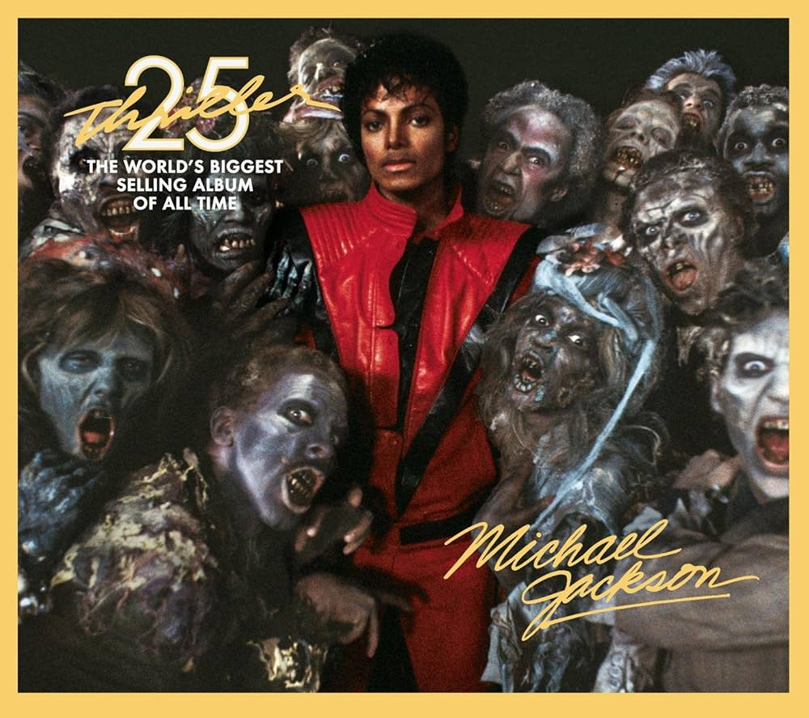

Thriller

Beat It
Fusión de pop y rock.
Solo de guitarra épico.
Mensaje anti-violencia.
Thriller
Tema principal con video de terror narrado por Vincent Price.
Revolucionó los videoclips.
Wanna Be Startin' Somethin'
Ritmo afro-funk.
Estribillo famoso: “Mama-say mama-sa mama-coo-sa”.
Billie Jean
Clásico del pop con bajo inolvidable.
Lanzó el “moonwalk”.